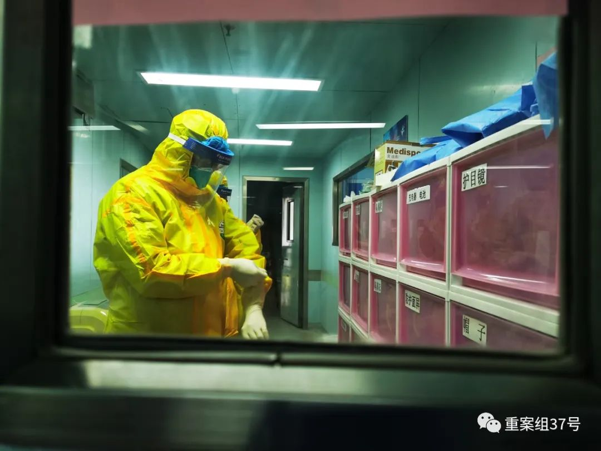

***
***“重组”金银潭：疫情暴风眼的秘密
原文链接 备份链接 *************▲************* 2020年2月22日晚，武汉市金银潭医院，医护夫妇涂盛锦(左)和曹珊“以车为家”。 （新华社/图） 全文共10527字，阅读大约需要22分钟。 这里发生的许多事 …
*****“恐怕今后很长一段时间，武汉的医院在接诊患者的时候，都要做新冠病毒筛查并兼顾治疗原发病。急诊科的压力，恐怕比疫情初期还要重。”*****

房明浩拍摄的金银潭医院南七楼ICU的工作场景。受访者供图
文 | 新京报记者 王昱倩
编辑｜李明 校对 | 吴兴发
►本文约4791字，阅读全文约需10分钟
金银潭医院南七楼的ICU重症监护室，收治的是最危重的新冠肺炎患者。直到3月1日轮休，“救火队长”房明浩已经在此坚守40余天。
房明浩是华中科技大学同济医学院附属同济医院急诊和重症医学科副主任，1月21日，也就是钟南山院士证实“新冠肺炎有人传人现象”的第二天，他赶赴金银潭医院支援。
当时，包括金银潭ICU的主任吴文娟在内，该科室的三位医生和两名护士都病倒了。原本支援的房明浩，变成了临时主任。
疫情初期，金银潭的重症病房，“病人排队一样进来，有三分之一甚至一半的病人只剩一口气了。”
3月11日，房明浩在接受新京报记者专访时称，眼下对新冠病毒的认识仍然不多，重症患者的救治也像在“走钢丝”。
面对诊疗手段的诸多争议，房明浩期待能有更多的有效经验。值得欣喜的是，目前的战役形势有所缓和，“连金银潭的ICU也有空床位了。”

穿着防护服工作的房明浩。受访者供图
接力支援：临时重组的ICU团队

新京报：你是什么时候到金银潭医院支援的？
房明浩：1月21日，钟南山院士证实有人传人现象的第二天，我赶到金银潭医院支援。
我是来接替我们医院急诊与危重症科副主任钟强教授的。他支援了10天后，感觉胸闷去拍了CT，高度疑似感染新冠肺炎。
新京报：当时金银潭医院的情况怎么样？
房明浩：当时，武汉市和湖北各级医院都调派医生支援金银潭医院，金银潭医院也从其他科室抽调医生加强ICU的人力。
有的没有重症经验，有的是非临床一线的，负责帮忙开医嘱、陪病人做检查。我们临时凑起来一个队伍，先排着班把日子过下去，把病人收治进来。
新京报：临时的ICU团队有多少人？
房明浩：传染病医院的ICU病房，一个床位应该配备4个护士。我们有16张床位，却只有30多个专科护士。到了1月底，人手紧张的情况慢慢缓解，护士人数达到了50多个人。
除夕晚上，国家首批医疗队赶到支援，抽调专家，来做临床组长帮助管理危重病人。之前卫健委专家组来的时候就意识到，三三两两的人员，跑到各个医疗单位支援，彼此不熟悉，效率低，后来就决定成建制地支援。我们来金银潭ICU支援时比较早，这儿的建制已经成型了。
新京报：患者的情况怎么样？
房明浩：金银潭ICU主要是从其他医疗单位接收危重病人。患者经过观察、确诊、转运，来到我们面前可能已经油尽灯枯。那段时间，ICU病房的死亡率特别高。好不容易转进来的病人，当天就有可能死亡半数。
床位一直是满的。病人很多“扎堆”收进来的。至少有三分之一或者半数，收进来时就只剩一口气了。
医生甚至并不知道这个人是从哪儿来的，我们一边打电话了解病情一边抢救。对于危重病人，我们往往是先救治再想办法找床位，容不得一点犹豫。
救治难题：至今我们对这个疾病的认识也不多
**
新京报：会遇到资源紧张的情况吗？
房明浩：一开始面临的问题是医疗资源紧张、人员不够。1月25号之前，我们每天都是特别混乱的状态。工作量增加到平时的3到5倍，每个人都达到了体力和能力的极限。
物资最匮乏的是封城的前10天。作为专业的传染病医院，金银潭的防护物资储备相对多一些。即使这样，最难的时候，物资储备也变成以1-2天为单位计算，医用防护服经常只够当天用的。
护士4小时换一次班，一天6批人手进隔离区，算下来是40-50人次，后来增加到60-70人次。防护服是每天的一项固定的消耗。
一开始，捐来的防护服是工业级的，大家还很嫌弃地说，这怎么能用得上呢？后来发现，真的用得上。护士的体力劳动多，在隔离区呆得时间长，医用防护服就留给她们，医生们都穿工业级的防护服。
直到2月中旬，情况才慢慢好转了，工业防护服也用得越来越少了。
新京报：你们在救治过程中面临的最大难题是什么？
房明浩：至今我们对这个疾病的认识也不多。
最早，我们认为是病毒性肺炎。每年秋、冬季，会发生很多青壮年患病毒性肺炎的病例，呼吸科和ICU的医生，每年都会面对这批病人。后来发现，新冠肺炎危重病人的整个机体受损模式、特点跟重症病毒性肺炎不一样。
这就导致在做每一个治疗的时候，我们都不知道效果会怎么样。事情做下去，不知道对患者是有益还是有害的。这是至今都不太明确的一个问题。
现在有很多专家共识，在危急状态下总结了一套经验，但是治疗方案是否有效还有待观察，现在定论，还是太早、太早。
新京报：重症病人的救治过程是不是更加漫长？
房明浩：这些危重病人的病程都非常长，远超平时。至今，我们抢救的大多数危重病人是在1月发病的。前期发烧，中间好了几天，又出现呼吸困难。
现在医疗条件变好了，不惜一切代价在救治，投入的医疗资源非常大。要不是这样，很多人撑不了那么久，可能一多半都死掉了。
病情变化：新冠肺炎的死亡原因更发散
**
新京报：眼下有没有总结出重症患者的病情发展规律？
房明浩：现在根本就不清楚，每个患者（病情发展路线）都不一样。很多重症病人的肺，一直到出院比死亡的病人严重，但他照样可以痊愈出院。
武汉一个医生感染后在金银潭抢救，他最后的胸片看不到什么特殊的，但还是死了。所以目前来说，肺只是一部分原因。
很多疾病，最后都走向了多脏器衰竭。新冠肺炎病人的死亡原因比以往见到的更发散。他会死于感染、出血、栓塞、心梗等等。这反映了整个身体机能的问题。
严格意义上，我们称它为器官功能的急性障碍，而不是衰竭。障碍是可逆的，衰竭是不可逆的。ICU能做的是做器官支持治疗，比如排尿功能不好，用透析机；包括使用人工肝、ECMO。
新京报：有些重症病人早上查房好好的，查房一结束就停止呼吸了。为什么病情会突然恶化？
房明浩：我们现在认为的可能性有两个方面。第一，病毒感染导致了全身机能损害，缺氧是其中一方面。多个脏器出现血栓，在机体最微小、末梢的单位在缺血缺氧、栓塞。这种损害是微观的。不是捅一刀子出血这么宏观的事情。
另一方面，我们搞重症的人普遍观察到，危重患者好像丧失了机体对缺氧的正常反馈。举个例子，一个正常人跑百米之后，会因为缺氧停止运动，通过弯腰呼吸等方式缓解，但这些患者却部分或全部丧失了这种自我保护机制。
身体机能的微观损害，是缓慢加重的。加重到机体无法维持正常，直接崩塌。一旦崩塌就特别严重。
新京报：所以病情的恶化是难以捕捉的？
房明浩：病人看上去很平静，心率、呼吸也不快，实际上缺氧很严重，但他们的身体没有反应，不知道死亡已经来临了。如果他自己都感觉不到缺氧，那太危险了。
实际上有些人还是在恶化的，表面上看不出来。这种病情变化不同于以往。按照以往，缺氧应该是呼吸很快，人昏迷了，全身大汗，但是他们还是很好的样子。医生通过查房或者现有的检查看不出来。类似情况，以往只有在百草枯中毒的病人身上见到过。
新京报：这种病情的急剧恶化，ICU密切关注的指标能提前预测到吗？
房明浩：我们会有包括生化、血气等一系列详细检查，但是目前效果都不理想。现在很难去预判患者的预后走向。
有的病人，几天前我就觉得他很重了，后面病情却一直稳定。也有的病人，各方面情况在明显好转，却会突然再次加重。指脉氧是80%的患者，有的5天、10天后依然是80%，有的不到两个小时就死了。
疗法争议：救治过程好像是在走钢丝
**
新京报：金银潭医院的病人大多是转院过来的，早期医生的诊疗方式会不会与金银潭医院产生分歧？
房明浩：早期大家都是“盲人摸象”，根据以往的经验，后来跟着诊疗方案走，大原则上是差不多的。
比如，医生之间有关于激素疗法的争议，但并不能说明现在使用激素，是好还是不好。以往重症肺炎的病人我们经常使用激素。危重病人是一千个人一千个样子，我们追求的是先活命，再治病。
以前从来没有过这种情况，大家都比较困惑，好的方法就靠反复总结经验教训。
新京报：对于重症患者，很多人把ECMO当做救命神器。
房明浩：我们医院七楼ICU几乎一个月没上一台ECMO。ECMO的维护需要专业的队伍，如果没有，上了只会让病人死的更快。它只是个拐棍或者轮椅，不是长出一双腿。
对于重症患者，不论是ECMO、呼吸机，包括用药，效果都不理想，都是争取时间的一种方式。如果时机抢得好，患者的器官功能就会恢复，否则就转向衰竭，慢慢死亡。
我们使用这些仪器的目的，是希望给他一个时机，让他的脏器在这种急性打击之后，像我们电脑死机再开机一样，重新启动起来。
这批病人的特点是“全”或“无”。要么是完全康复，要么是死亡。
新京报：前几天，法医刘良团队公布尸检结果，这些解剖结果对你们的临床治疗有帮助吗？
房明浩：他公布的结论，与我们通过患者早期的临床表现倒推的结论没有大的区别。医生用纤维支气管镜和肺泡镜，也可以看到肺部的状态。
病理是金标准，绝对的，但是病理解剖病例的覆盖面不够大的话，还是存在一定的缺憾。研究对象的年龄、性别、基础疾病，甚至尸体处理条件，都影响了对临床的指导价值。
如果能通过更多研究，尤其是更多的尸检，结合临床上观察可以作更细致的总结。
新京报：现在关于气管插管救治的争议很多，很多医生反映，插管的死亡率高居不下。
房明浩：我们最早的时候，插一个死一个，很绝望。后来插管的时间窗越来越往前提，才有活的。
插管的死亡率大，是因为插晚了，用心肺复苏了才插管肯定会死。越早插效果越好。在机体缺氧比较严重的转折点上，就要考虑使用插管。我们2月上旬有许多成功拔管的病人，跟插管时间有极大的关系。
用插管的话，肯定是选那些无创状态下继续恶化的病人。在这些病人中，如果不用插管，全都死了。用插管的话，有的人会活下来。插管的作用，在这里相当于ECMO。
新京报：插管治疗，病人气道直接开放，有医生指出，这项操作的感染风险很高。
房明浩：据我所知，在这次疫情期间没发生过这种事情。新冠肺炎病人的肺部都很干，喷溅、气溶胶风险低一些。
而且现在有了三级防护的概念，正压头套，可视插管设备都很充足，目前各个地方的麻醉科、插管小分队都没有职业暴露发生。
新京报：你怎么看待这些关于救治手段的争议？
房明浩：现在的救治过程好像在走钢丝，往哪个方向多一点都不合适。实际上，我对抗病毒、血浆治疗都持谨慎态度。这些病人折腾不起，做什么事情都要考虑到反面。
新京报：为什么有些患者出院后出现复阳？
房明浩：我个人认为，复阳和复发是不一样的。
核酸检测的是病毒的RNA特征，如果病毒被破坏成好几段已经死掉了，它的尸体是几段核酸序列，这些特征还在，会让核酸呈现阳性，但并不代表病毒是完整的或具有侵袭能力的。所谓阳性能不能证明是存活着的病毒，这是值得探讨的问题。
我们的临床经验是匮乏的——核酸检测是绝对准吗？有没有假阴性或者假阳性？肠道排出来的是完整的病毒还是破损的病毒？这些都有待于时间去检验。

房明浩拍摄的金银潭医院南七楼ICU的同事们。
疫情尾期：金银潭的ICU已经有空床位了
**
新京报：这段时间你的工作状态是怎么样的？收治压力减轻了吗？
房明浩：我是3月1日轮休的。之前是随叫随到，时间没有固定，手机不关机。我们要随时对病人作调整，不断地商议、权衡。
以前压力大的时候，一晚上收了5个病人，死了3个。方舱医院开始收治病人后，我们的压力就减轻了。
现在ICU居然也有空床了。另外，关于某些救治手段，医护人员也在慢慢形成一些共识，大家对情况都更熟悉了。
新京报：在ICU要面对重症患者甚至死亡，医护的心理状态会受影响吗？
房明浩：我做了20多年重症医学，已经过了那个情绪波动的年纪。带着惋惜、恐慌、担心的情绪，对抢救病人，对自己的心理状态都是不利的。
在疫情中后期的2月份，我们曾经做过一次心理调查。结果发现，搞重症和传染病的医护，也是最核心的这套班子，虽然长期加班在一线，但他们的心理状态好于平均水平。信心以及对执业环境的熟悉程度，对心理状态影响很大。
新京报：疫情后期，你觉得有什么需要关注的问题吗？
房明浩：武汉的医院，恐怕今后很长一段时间，在接诊患者的时候，都要做新冠病毒的筛查，又要兼顾治疗原发病，急诊科的压力，恐怕比疫情初期还要重。
还有一个问题很重要，我要呼吁一下。眼下整个医疗系统都在围绕疫情转，那些慢性疾病、肿瘤、突发车祸等病人怎么办呢？怎么尽快恢复正常医疗秩序，这也是全国面临的问题。
医院是为所有人的健康保驾护航的，长远看，更大的需求来自普通老百姓的就医需求，不能等着出现问题再补救。
*洋葱话题*
*▼*
*****你想对ICU一线的医生说什么？*****
*后台回复关键词*****“洋葱君” ，加入读者群****
***推荐阅读***

*********************既然在看，就点一下吧****** *********************
*********************
原文链接 备份链接 *************▲************* 2020年2月22日晚，武汉市金银潭医院，医护夫妇涂盛锦(左)和曹珊“以车为家”。 （新华社/图） 全文共10527字，阅读大约需要22分钟。 这里发生的许多事 …
原文链接 备份链接 新病毒面前，以往治疗经验会被推翻重来，很多当下的经验未经过时间考验，重症病人的治疗争议由此出现。 早期一些病人，起病快，病情很严重，病床不足加上120车辆供不应求，医院之间的周转并不顺畅，真正被送到ICU时，已经拖 …
原文链接 备份链接 “我们经历着生活中突然降临的一切，毫无防备。”生命中不能承受之轻，用来形容这些天，是那样的贴切。 “时代的一粒灰，落到个人头上，就是一座山。”在突然被按下暂停键的危城武汉，既有个人的茫然无助，也有凡人的挺身而出。恐慌， …
原文链接 备份链接 *************▲*************湖北省医疗救治组专家在同济医院中法新城院区新冠肺炎重症病区与患者交谈。 （新华社/图） 全文共6264字，阅读大约需要14分钟。 就在徐慧连觉得患者能化险为夷时， …
原文链接 备份链接 基层工作的压力不断加大2月6日，武汉市蔡甸区人民医院的重症病房。摄影/长江日报 陈卓 武汉战“疫”的攻坚时刻 *本刊记者/刘远航 李明子 黄孝光* 发于2020.2.24总第936期《中国新闻周刊》 雷暴与风雪相继到 …